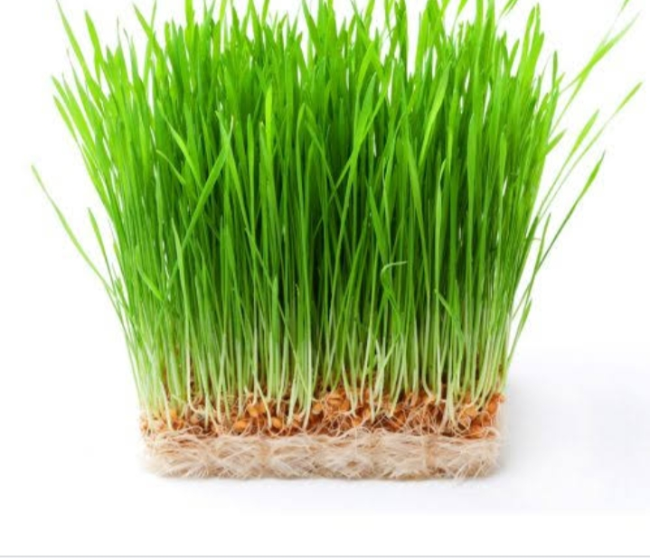

find it in juice bars and health food stores all across the United States. Most people consume it as a juice, taking a 1 to 2-ounce shot on its own or adding a shot to their favorite smoothie or juice recipe. You can also find it in powdered and supplement form for sale at most health food and grocery stores. While many farmers grow wheatgrass for animal feed, people are starting to purchase it or grow it themselves to incorporate into their diets. It gets harvested early in its development, typically 7 to 10 days after harvesting. It may look like the grass in your front yard, but the young shoots of the wheat plant are packed with nutrients that may provide important health benefits.

Wheatgrass is the young grass of the wheat plant, Triticum aestivum. It grows in temperate regions throughout Europe and the United States and can live indoors or outdoors. Many people grow their own wheatgrass by putting wheat seeds in water and then harvesting the leaves.
Wheatgrass is a natural source of vitamins and nutritions (a few of which are antioxidants) including:
Wheatgrass is considered a superfood - loaded with vitamins and minerals; it can help purify the body, removing toxins, heavy metals and cancer-causing agents from the liver and bloodstream. The chlorophyll and other nutrients found in wheatgrass help reduce cell-damaging free radicals in the body. The damaging free radical molecules make it difficult for your body to repair itself and can cause organ degeneration and signs of aging. Wheatgrass also works with your kidneys and liver to cleanse toxins from your body. Sometimes, your food can actually contaminate your body - and that's why you need to detox. The vitamins and nutrients it contains assist with the extraction of toxins and boosts your gut's ability to extract nutrients from the food you eat.

Wheatgrass juice is a potent raw, living food. When you drink high quality wheatgrass juice your body may produce great results such as a stronger immune system, improved skin condition, detoxification, and weight-loss. Wash ingredients well and soak wheatgrass into cold water for about 30 min Remove stem from apple and feed through the whole juicer or cut into thinner slices A slice of lemon with the skin compliments wheatgrass juice as a choice Juice wheatgrass in the Kuvings Whole Slow Juicer first, alternating between apple and lemon for best results Tip – Sprouts such as wheatgrass, radish sprouts, alfalfa, and vegetables such as chives are juiced using the same method. Wheatgrass helps prevent constipation and is full of vitamins, minerals, and fibre.